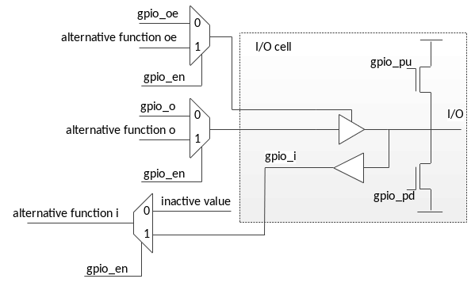

ehl_gpio представляет собой контроллер параллельного двунаправленного интерфейса общего назначения. Он имеет интерфейс generic со стороны пользователя. ehl_gpio имеет набор параметров, позволяющих настроить его для конкретной задачи.
ehl_gpio состоит из 3 структурных частей:
Software Registers выполняет следующие функции:
Interrupt Generator выполняют следующие функции:
Input Filter выполняют следующие функции:
_____________________
| |
---| clk data_out |---
---| res ifg |---
---| addr |
---| wr |
---| rd |
---| data_in |
| . . . . . . . . . . |
---| gpio_in gpio_out |---
| gpio_oe |---
| gpio_pd |---
| gpio_pu |---
| gpio_en |---
|_____________________|
ehl_lssi имеет интерфейс APB со стороны пользователя и интерфейсы обмена SPI / UART. Информация об интерфейсе APB содержится в [1].
| Имя | Тип | Размер | Описание |
|---|---|---|---|
| Generic | |||
| clk | I | 1 | Тактовый сигнал. Все триггеры в схеме тактируются нарастающим фронтом clk. |
| res | I | 1 | Асинхронный сигнал сброса. Активный уровень 0. Сбрасывает все регистры в начальное состояние. |
| wr | I | 1 | Разрешение записи в регистр или отдельный бит регистра: |
| rd | I | 1 | Разрешение чтения регистра: |
| data_in | I | WIDTH | Шина данных для записи в регистр. Записывается в регистр при операции параллельной записи. Для побитовых операций задает адресуемые разряды (активный уровень 1). |
| addr | I | 6 | Шина адреса для доступа к регистрам ehl_gpio. |
| data_out | O | WIDTH | Выходная шина данных регистров. Содержит значение регистра, выбранного адресом addr. |
| ifg | O | 1 | Сигнализирует прерывание от ehl_gpio. |
| GPIO | |||
| gpio_in | I | WIDTH | Входная шина данных с I/O. |
| gpio_out | O | WIDTH | Выходная шина данных для I/O. |
| gpio_oe | O | WIDTH | Разрешение данных на gpio_out: |
| gpio_pd | O | WIDTH | Разрешение притяжки к "земле": |
| gpio_pu | O | WIDTH | Разрешение притяжки к "питанию": |
| gpio_en | O | WIDTH | Разрешение функции gpio для вывода: |
Пример подключения GPIO к контактной площадке.
Если блок I/O содержит притяжки к "земле" и/или "питанию", то управление ими должно быть подключено к выводам gpio_pd и gpio_pd соответственно. Если притяжки отсутствуют, то соответствующие выводы gpio должны быть оставлены неподключенными для оптимизации в процессе синтеза схемы.
Если один I/O используется для нескольких функций, то gpio_en определяет какая функций в данный момент использует блок I/O. Двунаправленная альтернативная функция должна подключаться к сигналам "alternative function" мультиплексоров. Однонаправленная входная альтернативная функция должна переводить I/O в режим приема данных (при gpio_en равном 0b0) путем установки сигналов "alternative function o" и "alternative function oe" в неактивные значения. Однонаправленная выходная альтернативная функция должна переводить I/O в режим передачи (при gpio_en равном 0b1) путем установки сигналов "alternative function i" и "alternative function oe" в неактивные значения. Для всех типов подключения сигнал "inactive value" должен содержать значение, приходящее на вход альтернативной функции, когда выбрана функция ehl_gpio. Это значение не должно приводить к изменению состояния альтернативной функции (например, ложной генерации прерывания).